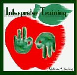

id I miss anything? Question frequently asked by students after missing a class
id I miss anything? Question frequently asked by students after missing a class

(The image above is from Welcome.)
id I miss anything? Question frequently asked by students after missing a class
Nothing. When we realized you weren't
here we sat with our hands folded on our desks
in silence for two hours
Nothing. None of the content of this course
has value or meaning
take as many days off as you like:
any activities we undertake as a class
I assure you will not matter either to you or me
and are without purpose.
Nothing. When you are not present
how could something significant occur?
but it was one place
And you weren't here
 ducation's purpose is to replace an empty mind with an open one.
ducation's purpose is to replace an empty mind with an open one.
 RADUATION EXAM - AUTHENTIC ASSESSMENT
RADUATION EXAM - AUTHENTIC ASSESSMENT
Read each question thoroughly. Answer all questions. Time limit: four hours. Begin immediately.
HISTORY: Describe the history of religion from its origins to the present day, concentrate specifically but not exclusively, on its social, political, economic, religious, and philosophical impact on Europe, Asia, America and Africa. Demonstrate your understanding by creating your own religion and describing its likely impact on world affairs. Be brief, concise and specific.
LITERATURE: Compose an epic poem based on the events of your own life in which you see and footnote allusions from T.S. Eliot, Keats, Chaucer, Dante, Norse mythology and the Marx brothers. Critique your poem with a full discussion of its metrics.
MUSIC: Write a piano concerto. Orchestrate it and perform it with flute and drum. You will find a piano under your seat.
MEDICINE: You have been provided with a razor blade, a piece of gauze, and a bottle of Scotch. Remove your own appendix. Do not suture until your work has been inspected. You have fifteen minutes.
BIOLOGY: Create life. Estimate the differences in subsequent human culture if this form of life had developed five hundred years earlier, with special attention to the probable effects on the English Parliamentary system. Prove your thesis.
PSYCHOLOGY: Employing principles from the major schools of psychoanalytic thought, successfully subject yourself to analysis. Make appropriate personality changes, bill yourself and fill out all medical insurance forms. Now do the same to the person seated to your immediate left.
ECONOMICS: Develop a realistic plan for refinancing the national debt. Run for Congress. Build a political power base. Successfully pass your plan and implement it.
PUBLIC SPEAKING: 2,500 riot-crazed students are storming the classroom. Calm them. You may use any ancient language except Latin or Greek.
PHYSICS: Explain the general theory of relativity. Keep it simple. Now demonstrate the limits of faster-than-light travel through an experiment of your own design.
AGRICULTURAL SCIENCE: Outline the steps involved in breeding your own super high yield, all weather hybrid strain of wheat. Describe its chemical and physical properties and estimate its impact on world food supplies. Construct a model for dealing with world-wide surpluses. Write your Nobel Prize acceptance speech.
MATHEMATICS: Give today's date, in metric.
CHEMISTRY. Transform lead into gold. You will find a beaker and three lead sinkers under your seat. Show all work including Feynman diagrams and quantum functions for all steps. You have fifteen minutes.
POLITICAL SCIENCE: There is a red telephone on the desk behind you. Start World War III. Report at length on its socio-political effects, if any.
** EXTRA CREDIT **
Define the Universe. Give two examples.
 h ye of little faith(ful rendition)!
h ye of little faith(ful rendition)!
"And he sighed deeply in his spirit, and saith, Why doth this generation seek after a sign? verily I say unto you, there shall no sign be given unto this generation."
 est and worst course evaluations
est and worst course evaluations
Text is useless. I use it to kill roaches in my room.
He teaches like Speedy Gonzalez on a caffeine high.
Help! I've fallen asleep and I can't wake up!
Have you ever fallen asleep in class and awoke in another? That's the way I felt all term.
Problem sets are a decoy to lure you away from potential exam material.
Recitation was great. It was so confusing that I forgot who I was, where I was, and what I was doing -- It's a great stress reliever.
He is one of the best teachers I have had. He is well-organized, presents good lectures, and creates interest in the subject. I hope my comments don't hurt his chances of getting tenure.
The absolute value of the TA was less than epsilon.
Information was presented like a ruptured fire hose -- spraying in all directions -- no way to stop it.
The course was very thorough. What wasn't covered in class was covered on the final exam.
 was told that they were originally called Interpreter Training Programs until
some people complained that there programs weren't "training" interpreters (as
one would train a dog) but preparing students to become interpreters. Of course, one could complain that the programs aren't "preparing" interpreters (as one would prepare a meal) but training them in the necessary skills to become an interpreter. Or you could opt for Interpreter Education Programs - or maybe not (too much confusion with IEPs for Deaf students). Or maybe. . .
was told that they were originally called Interpreter Training Programs until
some people complained that there programs weren't "training" interpreters (as
one would train a dog) but preparing students to become interpreters. Of course, one could complain that the programs aren't "preparing" interpreters (as one would prepare a meal) but training them in the necessary skills to become an interpreter. Or you could opt for Interpreter Education Programs - or maybe not (too much confusion with IEPs for Deaf students). Or maybe. . .
Yes nurse, I'll take my medication now.
 ime is the best teacher; unfortunately, it kills all its students.
ime is the best teacher; unfortunately, it kills all its students.
 ord, help me not be a perfectionist. (Did I spell that correctly?)
ord, help me not be a perfectionist. (Did I spell that correctly?)
 ou CAN make a difference!
ou CAN make a difference!
When I was quite young, my father had one of the first telephones in our neighborhood. I remember well the polished old case fastened to the wall. The shiny receiver hung on the side of the box. I was too little to reach the telephone, but used to listen with fascination when my mother used to talk to it.
Then I discovered that somewhere inside the wonderful device lived an amazing person - her name was "Information Please" and there was nothing she did not know. "Information Please" could supply anybody's number and the correct time.
My first personal experience with this genie-in-the-bottle came one day while my mother was visiting a neighbor. Amusing myself at the tool bench in the basement, I whacked my finger with a hammer.
The pain was terrible, but there didn't seem to be any reason in crying because there was no one home to give sympathy. I walked around the house sucking my throbbing finger, finally arriving at the stairway.
The telephone!
Quickly, I ran for the footstool in the parlor and dragged it to the landing. Climbing up, I unhooked the receiver in the parlor and held it to my ear. "Information Please," I said into the mouthpiece just above my head.
A click or two and a small clear voice spoke into my ear. "Information."
"I hurt my finger. . ." I wailed into the phone. The tears came readily enough now that I had an audience.
"Isn't your mother home?" came the question.
"Nobody's home but me." I blubbered.
"Are you bleeding?"
"No," I replied. "I hit my finger with the hammer and it hurts."
"Can you open your icebox?" she asked. I said I could.
"Then chip off a little piece of ice and hold it to your finger," said the voice.
After that, I called "Information Please" for everything. I asked her for help with my geography and she told me where Philadelphia was. She helped me with my math. She told me my pet chipmunk that I had caught in the park just the day before would eat fruits and nuts.
Then, there was the time Petey, our pet canary died. I called "Information Please" and told her the sad story. She listened, then said the usual things grown-ups say to soothe a child. But I was un-consoled. I asked her, "Why is it that birds should sing so beautifully and bring joy to all families, only to end up as a heap of feathers on the bottom of a cage?"
She must have sensed my deep concern, for she said quietly, "Paul, always remember that there are other worlds to sing in." Somehow I felt better.
Another day I was on the telephone. "Information Please."
"Information," said the now familiar voice.
"How do you spell fix?" I asked.
All this took place in a small town in the Pacific Northwest.
When I was 9 years old, we moved across the country to Boston.
I missed my friend very much. "Information Please" belonged in that old wooden box back home, and I somehow never thought of trying the tall, shiny new phone that sat on the table in the hall.
As I grew into my teens, the memories of those childhood conversations never really left me. Often, in moments of doubt and perplexity I would recall the serene sense of security I had then. I appreciated now how patient, understanding, and kind she was to have spent her time on a little boy.
A few years later, on my way west to college, my plane put down in Seattle. I had about half an hour or so between planes. I spent 15 minutes or so on the phone with my sister, who lived there now. Then without thinking what I was doing, I dialed my hometown operator and said, "Information , Please".
Miraculously, I heard the small, clear voice I knew so well, "Information." I hadn't planned this but I heard myself saying, "Could you please tell me how to spell fix?"
There was a long pause. Then came the soft spoken answer, "I guess your finger must have healed by now."
I laughed. "So it's really still you,' I said. "I wonder if you have any idea how much you meant to me during that time."
"I wonder", she said, "if you know how much your calls meant to me." "I never had any children, and I used to look forward to your calls."
I told her how often I had thought of her over the years and I asked if I could call her again when I came back to visit my sister.
"Please do, she said. "Just ask for Sally."
Three months later I was back in Seattle. A different voice answered "Information." I asked for Sally.
"Are you a friend?" She said.
"Yes, a very old friend," I answered.
"I'm sorry to have to tell you this, she said. Sally had been working part-time the last few years because she was sick. She died five weeks ago."
Before I could hang up she said, "Wait a minute. Did you say your name was Paul?"
"Yes."
"Well, Sally left a message for you. She wrote it down in case you called. Let me read it to you." The note said, "Tell him I still say there are other worlds to sing in. He'll know what I mean."
I thanked her and hung up. I knew what Sally meant.
he good ole days?
Truly, the life style of a school teacher has changed radically in the last fifty or sixty years. For example, a 1915 teachers' magazine listed the following rules of conduct for teachers of that day:
1. You will not marry during the term of your contract.
2. You are not to keep company with men.
3. You must be home between the hours of 8 p.m. and 6 a.m. unless attending a school function.
4. You may not loiter downtown in ice cream stores.
5. You may not travel beyond the city limits unless you have the permission of the chairman of the board.
6. You may not ride in a carriage or automobile with any man unless he is your father or brother.
7. You may not smoke cigarettes.
8. You may not dress in bright colors.
9. You may under no circumstances dye your hair.
10. You must wear at least two petticoats.
11. Your dresses must not be any shorter than two inches above the ankle.
12. To keep the school room neat and clean, you must: sweep the floor at least once daily; scrub the floor at least once a week with hot, soapy water; clean the blackboards at least once a day; and start the fire at 7 a.m. so the room will be warm by 8 a.m.
hen Jesus took his disciples up on the mountain and gathered them
around him. And he taught them, saying,
"Blessed are the poor in spirit.
Blessed are the meek.
Blessed are the merciful.
Blessed are you who thirst for justice.
Blessed are you who are persecuted.
Blessed are you who suffer.
When these things begin to happen, rejoice, for your reward will be great in Heaven."
And Simon Peter said, "Do we have to write this down?"
And Phillip said, "Will this be on the test?"
And John said, "Would you repeat that?"
And Andrew said, "John the Baptist's disciples don't have to learn this stuff."
And Matthew said, "Huh?"
And Judas said, "What's this got to do with real life?"
Then one of the Pharisees, an expert in the law, said, "I don't see any of this in your syllabus. Do you have a lesson plan? Is there a summary? Where's the student guide? Will there be a follow-up assignment?"
Thomas, who had missed the sermon, came to Jesus privately and said, "Did we do anything important today?"
 Return to the table of contents for "Humor and stories for interpreters".
Return to the table of contents for "Humor and stories for interpreters".